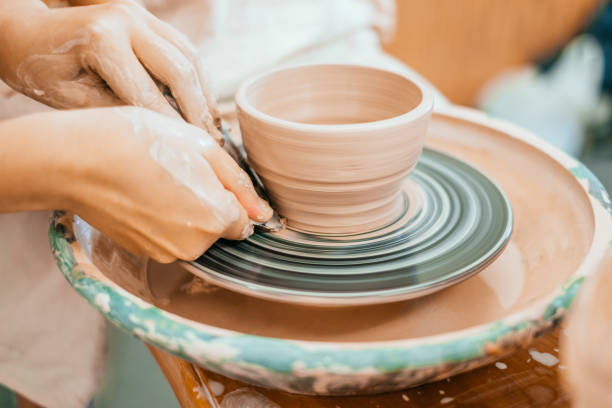
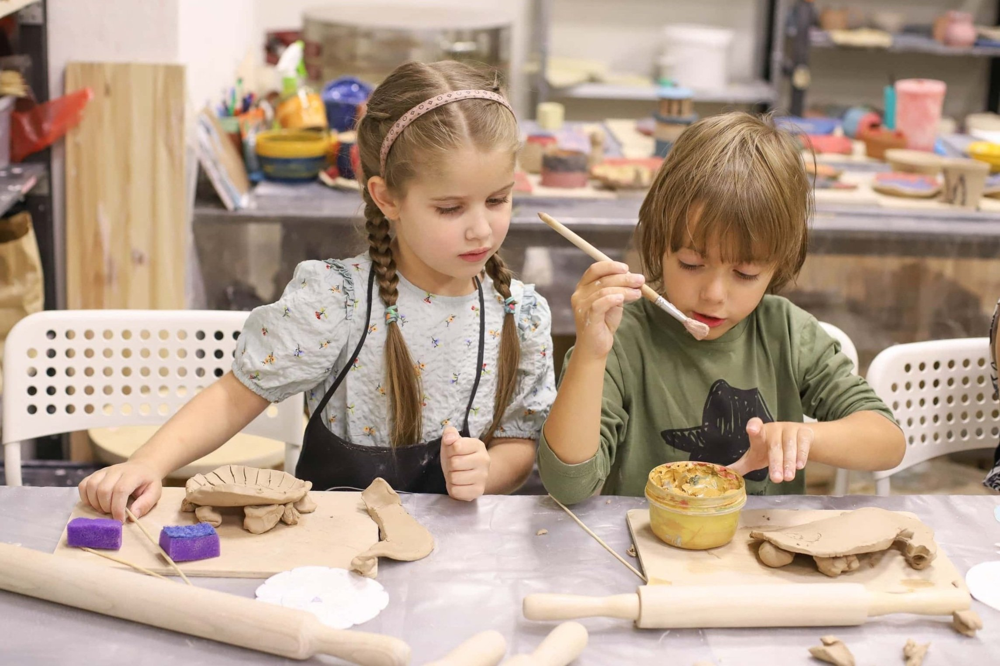
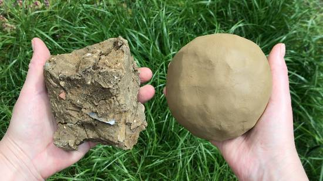
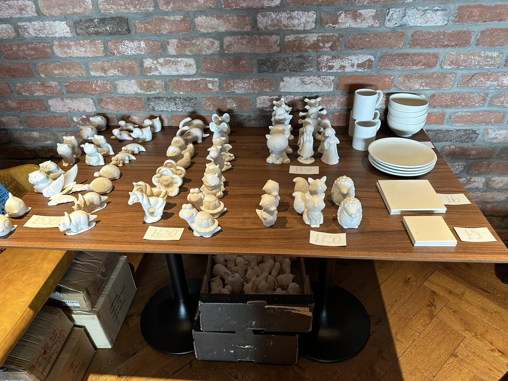
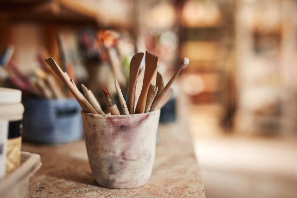
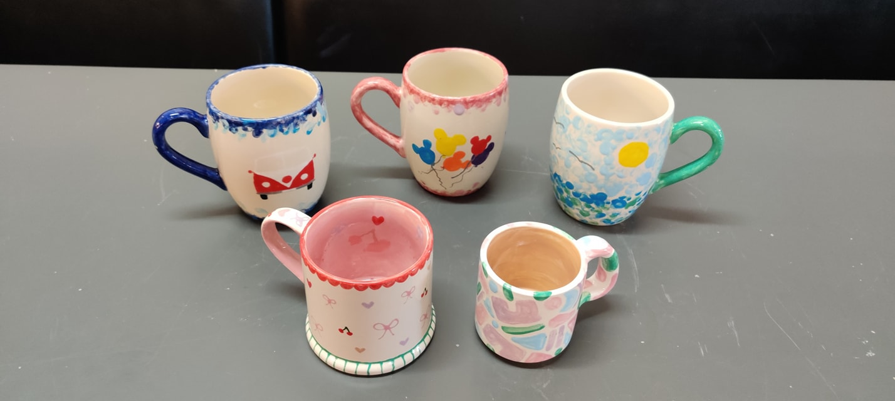
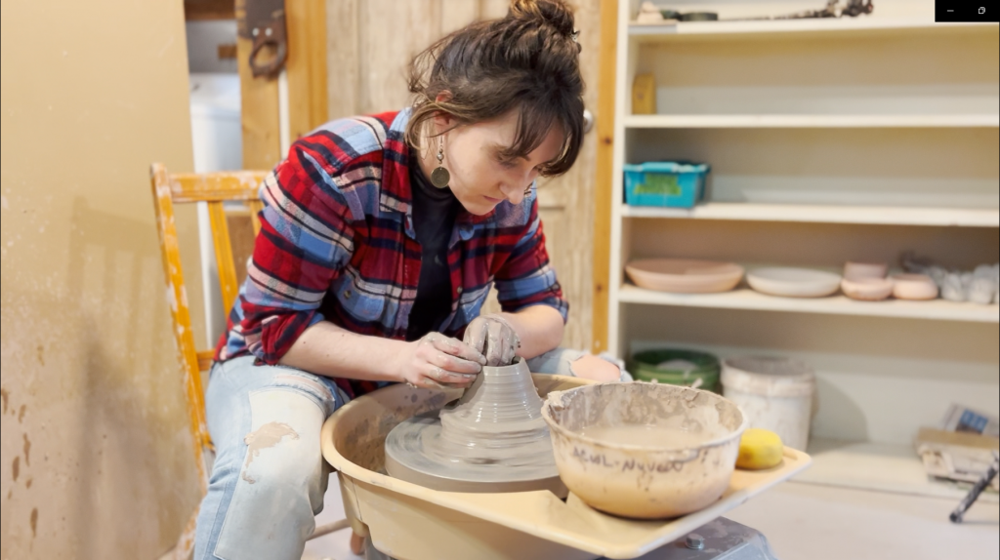

<!-- Our Values & Commitments Section -->
<section class="py-16 bg-amber-50">
    <div class="max-w-7xl mx-auto px-4 sm:px-6 lg:px-8">
        <div class="text-center">
            <h2 class="text-3xl font-extrabold text-amber-900 sm:text-4xl">
                Our Values & Commitments
            </h2>
            <p class="mt-4 max-w-2xl text-xl text-gray-600 mx-auto">
                The principles that guide everything we do at Little Potters
            </p>
        </div>

        <div class="mt-10 max-w-3xl mx-auto text-center">
            <p class="text-lg text-gray-700">
                At Little Potters, we're committed to preserving the ancient art of pottery while making it accessible
                to everyone.
                We believe in creating spaces where creativity flourishes, skills are shared, and sustainable practices
                are prioritized.
                Our mission is to connect people with clay, tradition, and each other.
            </p>
        </div>

        <div class="mt-16 grid gap-10 lg:grid-cols-3">
            <!-- Value 1: Craftsmanship & Tradition -->
            <div class="bg-white rounded-xl shadow-md overflow-hidden">
                <div class="p-8">
                    <div class="flex justify-center">
                        <div class="p-3 rounded-full bg-amber-100 text-amber-600">
                            <svg xmlns="http://www.w3.org/2000/svg" class="h-10 w-10" fill="none" viewBox="0 0 24 24"
                                stroke="currentColor">
                                <path stroke-linecap="round" stroke-linejoin="round" stroke-width="2"
                                    d="M12 11c0 3.517-1.009 6.799-2.753 9.571m-3.44-2.04l.054-.09A13.916 13.916 0 008 11a4 4 0 118 0c0 1.017-.07 2.019-.203 3m-2.118 6.844A21.88 21.88 0 0015.171 17m3.839 1.132c.645-2.266.99-4.659.99-7.132A8 8 0 008 4.07M3 15.364c.64-1.319 1-2.8 1-4.364 0-1.457.39-2.823 1.07-4" />
                            </svg>
                        </div>
                    </div>
                    <div class="mt-6 text-center">
                        <h3 class="text-xl font-bold text-amber-900">Craftsmanship & Tradition</h3>
                        <p class="mt-4 text-gray-600">
                            We honor centuries-old pottery techniques while embracing innovation. Our instructors are
                            masters of their craft,
                            preserving traditional methods while teaching accessible approaches for modern creators.
                        </p>
                    </div>
                    <div class="mt-6 flex justify-center">
                        
                    </div>
                </div>
            </div>

            <!-- Value 2: Learning & Sharing -->
            <div class="bg-white rounded-xl shadow-md overflow-hidden">
                <div class="p-8">
                    <div class="flex justify-center">
                        <div class="p-3 rounded-full bg-amber-100 text-amber-600">
                            <svg xmlns="http://www.w3.org/2000/svg" class="h-10 w-10" fill="none" viewBox="0 0 24 24"
                                stroke="currentColor">
                                <path d="M12 14l9-5-9-5-9 5 9 5z" />
                                <path
                                    d="M12 14l6.16-3.422a12.083 12.083 0 01.665 6.479A11.952 11.952 0 0012 20.055a11.952 11.952 0 00-6.824-2.998 12.078 12.078 0 01.665-6.479L12 14z" />
                                <path stroke-linecap="round" stroke-linejoin="round" stroke-width="2"
                                    d="M12 14l9-5-9-5-9 5 9 5zm0 0l6.16-3.422a12.083 12.083 0 01.665 6.479A11.952 11.952 0 0012 20.055a11.952 11.952 0 00-6.824-2.998 12.078 12.078 0 01.665-6.479L12 14zm-4 6v-7.5l4-2.222" />
                            </svg>
                        </div>
                    </div>
                    <div class="mt-6 text-center">
                        <h3 class="text-xl font-bold text-amber-900">Learning & Sharing</h3>
                        <p class="mt-4 text-gray-600">
                            We believe in the power of knowledge exchange. Our workshops foster collaborative learning
                            environments
                            where skills are shared, questions are welcomed, and everyone—from beginners to experts—can
                            grow together.
                        </p>
                    </div>
                    <div class="mt-6 flex justify-center">
                        
                    </div>
                </div>
            </div>

            <!-- Value 3: Ecology & Natural Materials -->
            <div class="bg-white rounded-xl shadow-md overflow-hidden">
                <div class="p-8">
                    <div class="flex justify-center">
                        <div class="p-3 rounded-full bg-amber-100 text-amber-600">
                            <svg xmlns="http://www.w3.org/2000/svg" class="h-10 w-10" fill="none" viewBox="0 0 24 24"
                                stroke="currentColor">
                                <path stroke-linecap="round" stroke-linejoin="round" stroke-width="2"
                                    d="M3.055 11H5a2 2 0 012 2v1a2 2 0 002 2 2 2 0 012 2v2.945M8 3.935V5.5A2.5 2.5 0 0010.5 8h.5a2 2 0 012 2 2 2 0 104 0 2 2 0 012-2h1.064M15 20.488V18a2 2 0 012-2h3.064M21 12a9 9 0 11-18 0 9 9 0 0118 0z" />
                            </svg>
                        </div>
                    </div>
                    <div class="mt-6 text-center">
                        <h3 class="text-xl font-bold text-amber-900">Ecology & Natural Materials</h3>
                        <p class="mt-4 text-gray-600">
                            We're committed to sustainable practices. From locally-sourced clay to eco-friendly glazes,
                            we minimize our environmental impact while teaching participants about the importance of
                            respecting the earth that provides our materials.
                        </p>
                    </div>
                    <div class="mt-6 flex justify-center">
                        
                    </div>
                </div>
            </div>
        </div>

        <div class="mt-16 bg-white p-8 rounded-xl shadow-lg">
            <div class="flex flex-col md:flex-row items-center">
                <div class="md:w-1/2 mb-6 md:mb-0 md:pr-8">
                    <h3 class="text-2xl font-bold text-amber-900">Our Commitment to You</h3>
                    <p class="mt-4 text-gray-600">
                        We promise to provide a welcoming, inclusive environment where creativity is celebrated,
                        skills are nurtured, and the joy of working with clay is shared. Every workshop is designed
                        with care, ensuring you have the guidance, tools, and inspiration needed to create something
                        beautiful and meaningful.
                    </p>
                    <div class="mt-6">
                        <a href="#" class="inline-flex items-center text-amber-600 font-medium hover:text-amber-800">
                            Read our full mission statement
                            <svg xmlns="http://www.w3.org/2000/svg" class="ml-2 h-5 w-5" viewBox="0 0 20 20"
                                fill="currentColor">
                                <path fill-rule="evenodd"
                                    d="M12.293 5.293a1 1 0 011.414 0l4 4a1 1 0 010 1.414l-4 4a1 1 0 01-1.414-1.414L14.586 11H3a1 1 0 110-2h11.586l-2.293-2.293a1 1 0 010-1.414z"
                                    clip-rule="evenodd" />
                            </svg>
                        </a>
                    </div>
                </div>
                <div class="md:w-1/2">
                    <div class="grid grid-cols-2 gap-4">
                        
                        
                        
                        
                    </div>
                </div>
            </div>
        </div>
    </div>
</section>